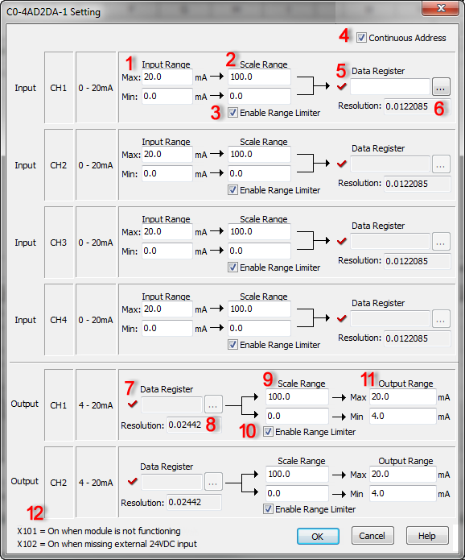

| C0-4AD2DA-1 Settings |
|
The C0-4AD2DA-1 Setting dialog allows the customer to set up the scaling for the analog input and output values, and assign DF memory addresses to store the scaled analog input values and analog output values before scaling.


1 Input Range: Enter the maximum and minimum Input Range to scale.
2 Scale Range:
Enter the maximum and minimum scale values.
In the following example, the Input Range is set to 10.0 - 18.0mA and the Scale Range is set to 0.0 - 100.0. This means input current 10.0mA will be converted to 0.0 and input current 18.0mA will be converted to 100.0. When input current is 14.0mA, 50.0 will be put in DF1.


3 Enable Range Limiter:
By checking this option, the analog values that are outside of the Input Range will be adjusted to the minimum or maximum value of the Scale Range.
1. Enable Range Limiter is ON.


2. Enable Range Limiter is OFF.


4Continuous Address: If you want to assign Continuous DF Memory Addresses to store the scaled analog input values and the analog output values before scaling, please check this option. In this case, you just need to assign a DF memory address to Input CH1. The DF memory address will be the starting address of those continuous DF memory addresses.
5 Data Register : Enter a DF memory address to store the scaled analog value. In the CLICK PLC, all analog data are handled as floating point numbers. So you can select only DF memory addresses.
6 Resolution: The CLICK Software automatically calculates the resolution of the scaled data according to the bit resolution of the analog input and the scaling setup, and displays the value here.
7 Data Register: Enter a DF memory address that stores the analog output value before scaling. In the CLICK PLC, all analog data are handled as floating point numbers. Therefore, you can only select DF memory addresses.
8Resolution: The CLICK software automatically calculates the resolution of the analog data before scaling according to the bit resolution of the analog output and the scaling setup, and displays the value here.
9Scale Range: Enter the maximum and minimum scaled values.
In the following example, the Scale Range is set to 0.0 - 100.0 and the Output Range is set to 10.0 - 18.0mA. This means analog value 0.0 in DF1 memory address will be converted to output current 10.0mA and analog value 100.0 will be converted to output current 18.0mA. When the DF1 memory address has analog value 50.0, it will be converted to output current 14.0mA.


10Enable Range Limiter: By checking. this option, the analog values that are out side of the Scale Range will be adjusted to the minimum or maximum value of the Scale Range.
1. Enable Range Limiter is ON.


2. Enable Range Limiter is OFF.


11 Output Range: Enter the maximum and minimum Output Range after scaling.
12 X bit Addresses: You can use these X bit addresses to monitor the status of this analog combo I/O module.